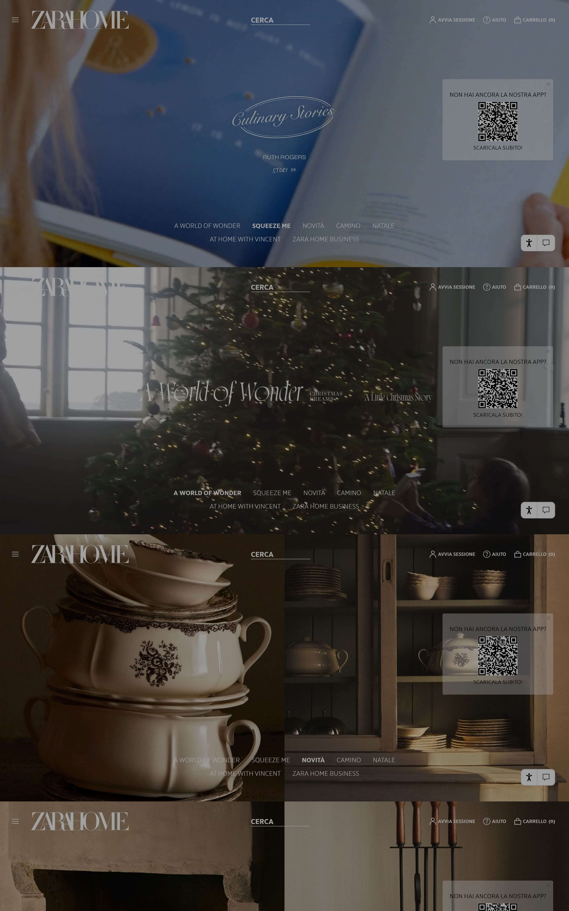
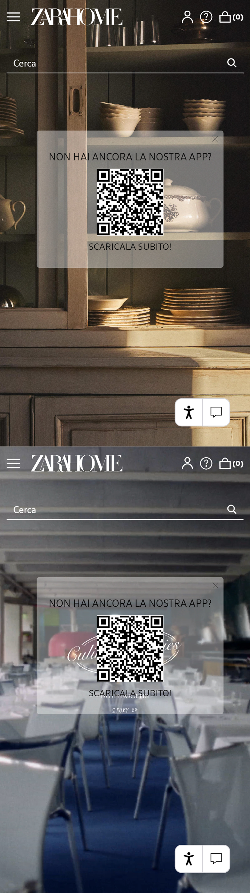

Zara Home has a strong editorial identity (immersive photography, minimalism, storytelling),
but that choice can conflict with e-commerce needs: orientation, clarity, and conversion.
This work: a UX/UI audit and a redesign of Homepage + Product Page, on desktop and mobile.
The experience communicates inspiration, but it doesn’t support action, orientation, and conversion enough:
CTAs are low-visibility, micro-interactions are weak, hierarchy feels flat, and too many elements share the same visual “weight”.
Low
E-commerce clarity
The homepage doesn’t clearly communicate what to do first.
Weak
Visual hierarchy
Images, copy and modules compete — fewer anchors and priorities.
Poor
Discoverability
Actions and expandable sections don’t look interactive.
01 Audit
Key issues
Heuristics + UI signals
Homepage
The homepage feels editorial-first, but it doesn’t guide users. Navigation cues are subtle,
CTAs don’t stand out, and the content stack creates friction for shopping intent.
Flat hierarchy: too many elements compete → no clear priority.
Borderline contrast: text on detailed imagery reduces readability.
Weak affordances: hover states and feedback are barely noticeable.
Early overload: hero + editorial content + utilities land all at once.
Core insightInspiring is not enough: the page needs orientation and progressive disclosure.
Evidence (before → after)
Visual snapshots used to support the audit and highlight the redesign direction.
Click to zoom.
Homepage · Desktop

Homepage · Mobile

Focus: clearer category entry points, more visible CTAs (“View all / Explore”), and stronger modular hierarchy.
PDP visuals
Product page snapshots supporting the issues and the new funnel clarity.
Click to zoom.
PDP · Desktop PDP · Mobile
Focus: clearer action hierarchy (“Add to cart”), explicit expand/collapse cues, and less recommendation overload.
Product detail page (PDP)
The PDP preserves visual consistency across devices, but the purchase journey lacks
a clear behavioral hierarchy. Some friction points affect both desktop and mobile,
while others are device-specific.
Unclear primary action
DesktopMobile
Add-to-cart does not visually dominate enough to clearly signal the next step.
Decision hierarchy confusion
Desktop
Quantity selector sits too close to size/options, increasing the risk of perceived overlap.
Recommendation overload
Desktop
Large related-product grids dilute focus from the core purchasing decision.
Design goal
Separate decision layers (variants vs quantity), reinforce the primary action,
and structure content progressively depending on device context.
02 Solution
Redesign strategy
Hierarchy + Progressive disclosure
Preserve the editorial identity, but introduce a clear orientation system:
stronger visual hierarchy, consistent patterns across desktop/mobile, explicit interaction cues,
and reduced cognitive load.
Navigation architecture
A clear multi-level structure that separates products, collections, editorial, and services,
improving information scent and predictability.
A World of Wonder · Culinary Stories · Lifestyle · At Home With
Top
Services
Zara Home Business · Personalization
PrinciplesConsistency, recognition over recall, clear hierarchy, cognitive accessibility.
Homepage: more modular, less intrusive
A calmer hero, clearer category entry points, and modules that communicate priority and action.
The experience remains editorial — but becomes navigable.
Modular structure: clear sections (special selection, new in, collaborations).
Visible CTAs: “View all / Explore collection” with stronger affordances.
Improved readability: better contrast and type sizing on imagery.
Separate quantity vs variants, use explicit tabs (desktop) and accordions (mobile), and reduce recommendation overload.
The product stays the hero, and the action becomes obvious.
+
Clarity
Primary actions are guided by hierarchy and cues.
—
Overload
Fewer distractions; stronger focus on purchase.
↔
Consistency
Aligned patterns across desktop and mobile.
03 Prototypes
Restyling (Desktop & Mobile)
Click to zoom
Final outputs: homepage and product page. All images are clickable (zoom),
so the case study stays readable without losing detail.